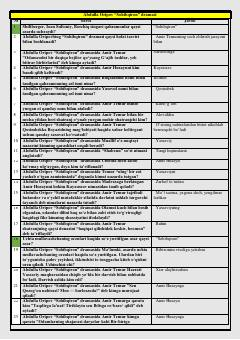

SAmir Temur hayoti va faoliyatiga bag'ishlangan tarixiy dramatik asar.
Ushbu asar O'zbekiston Qahramoni Abdulla Oripov qalamiga mansub bo'lib, Amir Temur shaxsiyati va uning davlat boshqaruvidagi donishmandligini yorituvchi dramatik asardir. Kitobda Amir Temurning tarixiy siymosi, uning adolatparvarligi va murakkab siyosiy vaziyatlardagi qarorlari badiiy tilda aks ettirilgan.